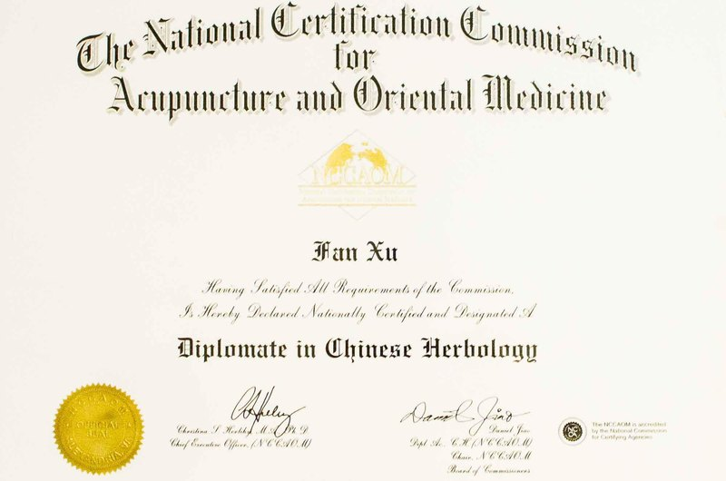
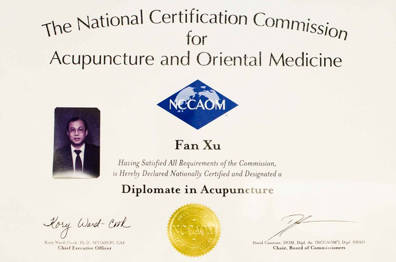

George Fan Xu
L.Ac., OMD
A third-generation practitioner of Traditional Chinese Medicine from Guangzhou, caring for Atlanta patients since 1987.

I was born in Guangzhou (formerly Canton), a harbour city in southern China. My family has a long history of Traditional Chinese Medicine, and for three generations has practiced professionally. Growing up in this environment had a profound influence on me. I began learning the practice at age 14. For several years, I was taught by my father at his clinic.
At age 18, I left to attend Guangzhou Traditional Chinese Medicine, one of the most prestigious medical colleges in China. Here I stayed for five years, until graduating. During that time I had the opportunity to study up close and extensively with some of the finest specialists from various styles of Chinese Medicine.
I came to the United States in 1983, initially staying in Vermont under a student exchange. Although I enjoyed my time there, I did not find the weather especially appealing, so I moved to Atlanta in 1987. I eventually established a Chinese Medical Clinic in Chamblee (north Atlanta) in 1994. Soon after, I was able to set up a second office in Doraville.
Generally, people come to my clinic for chronic problems that have been unresolved for several years by Western medicine. They also come for acute conditions and general health concerns. Usually, there is an initial consultation, after which an individualized prescription will be given. Traditional Chinese Medicine is holistic and integrated. My aim is to cure the whole person and re-establish balance. Remember that I am always available for any questions or concerns you may have.
Nationally certified
Certified by the National Certification Commission for Acupuncture and Oriental Medicine (NCCAOM) in both acupuncture and Chinese herbology.


Approach
Treats the cause instead of the symptoms, and takes time to educate patients about their condition and treatment.
Follow-up
Follows up office visits with phone calls to check on each patient’s progress.
Questions about your health?
Call to set an appointment or ask about Traditional Chinese Medicine.